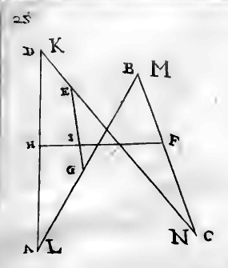

Proposition XXII: Concurrency and Coplanarity in Skew Quadrilaterals¶




Proposition XXII · Theorem XI
Let two lines AB, BC containing the angle B cut two other lines AD, DC containing the angle D — cut them, I say, at the points A, C — and let the lines CB, BA, AD, DC be so divided at the points F, G, H, E that the ratio DE to EC is compounded of the ratios BF to FC, AG to GB, and DH to HA. I say that the joined lines HF, GE intersect each other, say at I, and therefore exist in one plane: for this to be established, it will be necessary to suspend from the points A, B, C, D the heavy bodies L, M, N, K, so that GI to IE be as the two heavy bodies KN to the two LM; and HI to IF as the two MN to the two LK, which we shall perform thus.
(Tab. 3, Figs. 25–27) Let it be made as BF to FC, so heavy body N to M; as AG to GB, so M to L; and as DH to HA, so L to K. Weight N to K is compounded of the ratios of the heavy bodies N to M to L to K, namely of the ratios of the straight lines BF to FC, AG to GB, and DH to HA; but of the same is compounded DE to EC; therefore as DE to EC, so N to K. Since therefore E is the center of balance-beam CD, that is, of heavy bodies N, K, and G the center of heavy bodies LM, the center of all the heavy bodies KN, LM will lie on balance-beam GE; and by the same reason, since H is the center of heavy bodies LK, and F is the center of heavy bodies MN, the center of all the heavy bodies LK, MN in the same former position will likewise lie on balance-beam HF; and since this center is unique,
f. 0048 · p. 31it is necessary that the balance-beams, or lines GE, HF, intersect each other, as at I, and this will be the center of both balance-beams, and therefore as HI to IF, so the two heavy bodies MN to the two LK; similarly as the straight line GI to IE, so the two heavy bodies KN to the two heavy bodies LK, which &c.